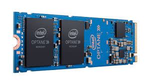

Richard Adikari, Dec 9, 2020

Cybersecurity firm FireEye, which has been prominent in the fight against nation-state cyberthreats, has been itself attacked by "a highly sophisticated threat actor, one whose discipline, operational security, and techniques," company CEO Kevin Mandia announced Tuesday.This indicates the attack is likely state-sponsored, by a nation "with top-tier offensive capabilities". FireEye is investigating the incident together with the United States Federal Bureau of Investigation and other key partners, including Microsoft.Continue reading.
Kim Lyons, Dec 12, 2020
Facebook has reversed a change to its News Feed algorithm that prioritized authoritative news sources, even though some employees asked that the "nicer" News Feed become permanent, according to The New York Times. Following a sharp increase in misinformation on the platform in the immediate aftermath of the 2020 US presidential election, Facebook changed how it weighed the quality of news sources based on a "news ecosystem quality" (NEQ) score. Outlets including the Times, NPR, and CNN saw Facebook traffic rise, while more partisan sites that published incendiary or misleading news about the election saw Facebook traffic decrease.Continue reading.
Jamshed Avari, Dec 17, 2020
Intel has unveiled a number of new SSDs for client PCs as well as data centres. The lineup includes Optane Memory and Optane Persistent Memory drives, as well as 144-layer QLC and TLC flash-based drives to cater to various use cases. The company also disclosed new roadmaps for its enterprise customers. The announcements were part of a two-day Memory and Storage event which also included multiple keynotes, demonstrations, case studies, and developer sessions about memory and storage technology. Exact details about the pricing and availability of the six new SSDs has not been announced yet.Continue reading.